lec-16 Auto-encoder
Table of Contents
1 Auto-encoder
outline
- starting from PCA
- Deep auto-encoder
- Auto-encoder, Text Retrieval
- Auto-encoder, Similar Image Search
- Auto-encoder, Pre-training DNN
- De-noising auto-encoder
- Learning Deep Belief Network
- Auto-encoder for CNN
- CNN unpooling
- CNN deconvolution
- Decoder
1.1 auto-encoder 给非监督学习带来的曙光
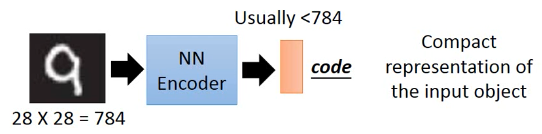 Encoder 这里有类似【压缩】的效果 Compact representation of the input object 但是经过 encoder 之后，我们得到的 code 并没有参照物（y）无法衡量生成的好坏，也就无法得到最优的结果 >>>不管這些，我们先逆向，找一个 decoder 然后生成回 input image
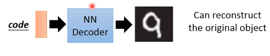
我们可以把他们接起来【一齐训练】
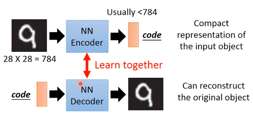 这样，我们可以用【解码的结果与自己比较】的方式实现【监督学习的效果】【然而整个过程却是非监督的】
1.1.1 单层神经网络实现 PCA :auto-encoder
PCA 里面其实有非常类似的概念【注】通常 NN 拿到数据就要做 normalize,nromalize 之后，mean(x~) 就是 0, 所以这里省略了 [- x~] 的部分，
lec-13 的 ppt: 用 Neural Network 来表示 PCA : Autoencoder
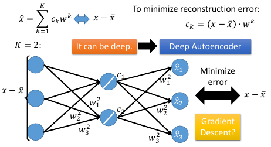
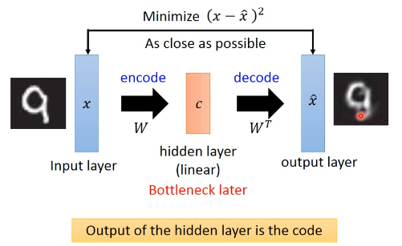
把中间的 c 看做一个 hiden-layer 的话，他是 PCA 降维的正向结果，是维度较少的。所以是 bottleneck layer, PCA 那一讲给了两种算法，一个给出【数学解】一个给出【近似解】，近似解就是用 GD
1.1.2 多层神经网络实现 PCA:deep auto-encoder
按照以往的经验，一层 hiden-layer 能力是不足以做好的。所以我们考虑多层 hiden-layer
Reference: Hinton, Geoffrey E., and Ruslan R. Salakhutdinov. "Reducing the dimensionality of data with neural networks." Science 313.5786 (2006): 504-507
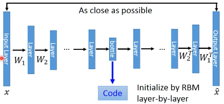 需要对每一层做 RBM layer-wise 的优化
【注】按照理论说，第一层权重 W1 应该与最后一层权重互为转置，但是实际做的时候可以证明，symmetric is not necessary. 亦即不需要转置对称。
上面那篇论文给出的结果，异常的好：
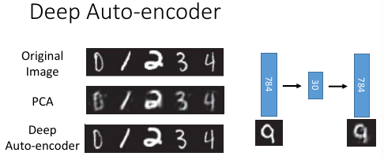
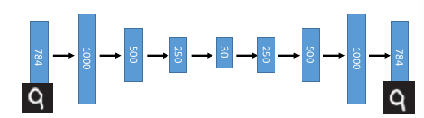
如果是用 PCA 降到 2 维做 visualization
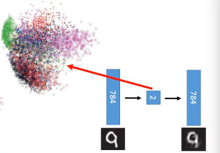 和用 deep-autoencoder 降到 2 维做 visualization 效果：
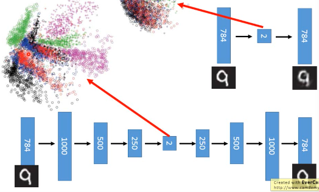 明显也是 deep-encoder 比较好
1.2 auto-encoder 应用：找到【意义】
1.2.1 auto-encoder 文档处理
想做相似文章搜寻， 把一篇文章表示成一个 vector Vector Space Model, 就是很多篇文章（向量）放在一起
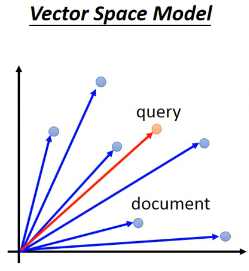
怎么把文章表示成 vector 呢？ 最简单的做法就是：bag of word Bag of word 就是把某种语言【所有的常用词】都做为【一个向量】的 features这样某一篇文章所有出现的词汇都去对比【这个向量】，并在向量对应位置增加'1',如此，这篇文章就表示成了【一个向量】，每一个 dimension 就是这个单词在这篇文章中出现得次数。
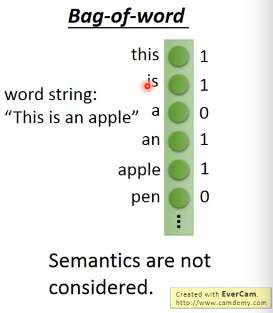
如果还想做得更好，每一个向量的 dimension 上的次数还要乘以【inverse document frequence】，即，不仅仅用词汇的出现次数，还要乘以这个词汇的【重要性】，这个重要性就是用 inverse document frequence 来表明的.
丢失的语言【意义】 但是这个模型（bag of word）很弱，因为他没有考虑任何【语义－－单词之间的关系】关的东西。也就是说【所有单词都是 indenpendent】。
用 auto-encoder 寻找【语】义 The documents talking about the same thing will have close code
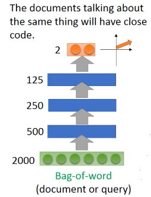
开始我把每一篇文章（训练集）都通过 auto-encoder 来转换成一个 2 维度向量整个训练集 visualization 之后，会散开成海星状（效果很好）。然后来了一个新的 query,我也用同样的 auto-encoder 去把他转换成一个 2 维度向量。按照 vector space model 就可以得出谁是 query 的相似文章。
auto-encoder 的效果，远远好于 LSA
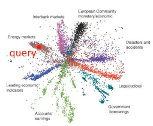
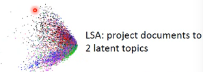
1.2.2 auto-encoder 以图找图
普通的做法是：计算像素之间的相似度(用欧式距离代表相似度）。 Retrieved using Euclidean distance in pixel intensity space 如果仅仅如此做，效果很搞笑：
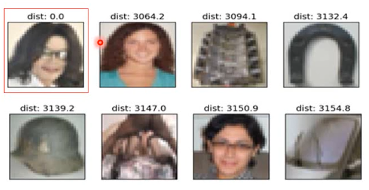
丢失的图片【意义】
用 auto-encoder 寻找【图】义 The documents talking about the same thing will have close code
还是用 auto-encoder,而且因为 auto-encoder 是非监督的，不需要 label 感觉跟【encoder->语义】的感觉是一样的，图片也有某种【图义】。 (自带 decoder,用自己学自己，reconstruction error), 所以你就可以写个爬虫随便从网上 download 一堆图片，然后丢进去让他学就可以了。
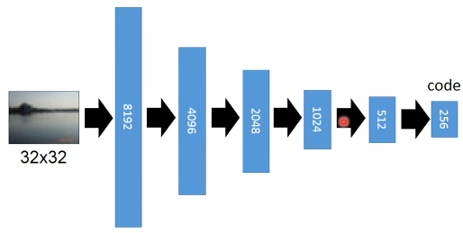
如果不是用 pixel 上算相似度，而是在 code 上算相似度，得到的效果好很多
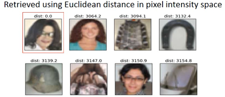
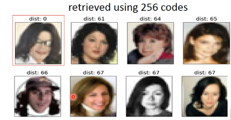
1.2.3 auto-encoder 用来 pre-training
训练深度神经网络的时候，经常面对的一个问题是 parameter initialization, 不同的初始值会对结果产生很大的影响
>>> 什么是预训练？ ------------------------------ pre-training :找一组好的参数初始值 ------------------------------
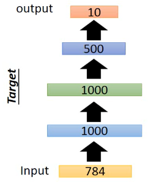
这是我设计的一个 Network structure,input 是 28*28=784 的 image 输出是一个 10 维度向量，每一位都是 image 属于这个数字的概率
下面我要做 pre-training 获得较合理的 parameter initial value每次预训练都是一个 auto-encoder ,层层预训练，层层推进
1.3 预训练步骤
1.3.1 step1: 针对第一隐含层（1000）做 pre-traning
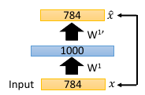
注意这个待训练的目标层是不是比输出层维度大，如果大，需要强 regular
注意，这里是 layer-wise 的 pre-training,也就是针对每一层都需要做一个 auto-encoder 但是在做这个的时候，要注意，我们一般的 auto-encoder 的 hiden-layer是要比 input 小，但是这里做 layer-wise 不能保证每一层都比前一层要小， 所以需要很强的 regularization, 很强的 regular (比如 L1-regular) 可以让这个较高维度的hiden-layer(比如图中的 1000) 是比较 sparse 的，大概保证能学点东西，否则auto-encoder 可能什么都学不到，原封不动输出 input(图中 784 维度), 这是auto-encoder 的特性。
1.3.2 step2: 保留（fix）预训练的权重 W1
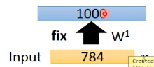
1.3.3 step3: 把所有样本按照 step2 提供的转换，转换为 1000 维度的样本
1.3.4 step4: pre-training 下一层
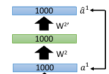
1.3.5 step5: fix W2, 所有样本再转换一次
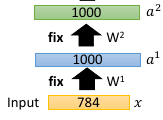
1.3.6 step6：再 pre-training 下一个 layer
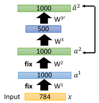
如此重复下去，直到最后一个隐含层的 parameter 训练好，fix 住的 W1,W2,W3 就是整个 DNN 的初始值, 通往 outpulayer 的权重不能预训练，需要给一个 random init. 现在 W1,W2,W3,W4, 都有了，再用 backpropagation 做优化.
1.3.7 预训练的实际意义
现在的 deep-learning 已经不需要做 pre-training 也可以做的很好，但是
>>> 预训练的妙用 -------------------------------------------------------------- pre-traning 的妙用在于 如果有很多 unlabeled data 和少量 labeled data 你就 可以先利用 unlabelled data 预训练这个神经网络，然后利用 labeled data 对网络 做微调即可。 所以 pre-training 因为其 unsupervised 的特性，在缺少 labeled data 的时候 还是很有用的。 --------------------------------------------------------------
1.3.8 让 auto-encoder 做得更好
>>> de-noising auto-encoder ---------------------------------------------------------------- Vincent, Pascal, et al. "Extracting and composing robust features with denoising autoencoders." ICML, 2008. ----------------------------------------------------------------
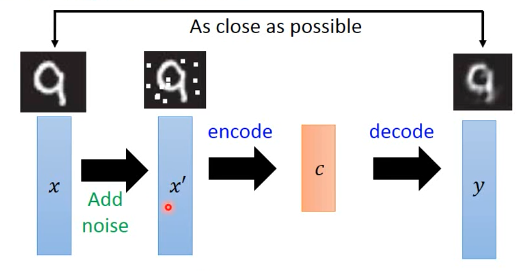
- 给原始训练集加入 noise
- 用 noise 训练集训练一个 auto-encoder and decoder
- loss-fn 比较的是 decoder 结果与原始训练集的差距encoder 同时学到了【杂讯过滤】－－－ 所以叫做 de-noised auto-encoder
- 这样可以得到比较 robust 的 dimension reduction 函数
1.4 auto-encoder for CNN
auto-encoder 似乎长于优化，不论是之前的参数初始化，还是下面的优化 CNN
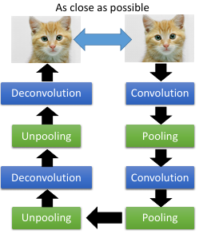
1.4.1 Unpooling 是什么
unpooling 要记住我做 pooling 时候是从哪里取值的（比如 maxpooling 4 选 1,这个‘1’是在原来‘4’的哪个位置）记住 max locations
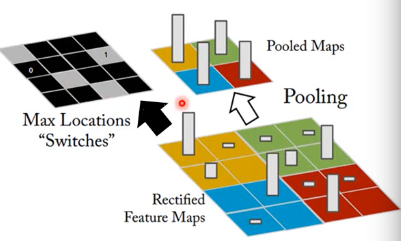
unpooling 是把比较小的 matrix 变成原来的四倍，也就是按照记录的位置填好放大的 matrix ,其他补零。
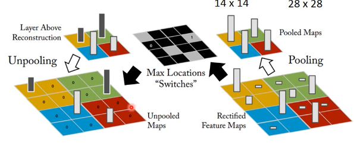
例如做完 unpooling 前后
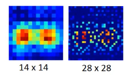
keras 这个机器学习框架是用另一种方法，他不记录位置，直接把小矩阵的每一个位置复制 4 份，形成大矩阵。
1.4.2 Deconvolution 是什么
actually, deconvolution is convolution deconvolution is just a padding convolution convolution 图示是这样
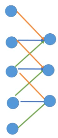
我们以为的 deconvolution 的图示是这样
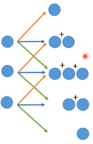
但其实，这个图示跟 padding convolution 的图示是一样的意思
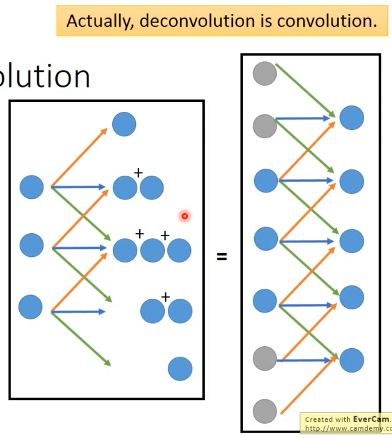
所以两者本质相同。
1.5 auto-decoder 生成模型
encoder: image --- 降维 --- code decoder: code --- --- image
所以 decoder 可以用来生成图片，一个生成模型这个试验的过程是这样的，仍然是 MNIST 手写识别.
首先 input 一大笔 image,训练 auto-encoder 和 decoder然后，把得到的 C,中间隐含 层的输出拿出来，他就是 code,我都映射到 2 维度，然后画其分布图
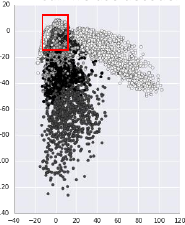
然后，选取有数值分布的一块区域，均匀 sample code. 這些 code 中必然存在那些没有对应 image 的 code. 然后丢进 decoder 去生成图片
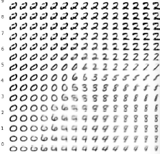
效果非常的好
1.5.1 方法改进
但是，真的有个任务让你去生成图片的时候，你还要先 encoder 然后visualization 然后再根据分布选取有点的位置 sampling code. 这个过程很耗时，所以，我可以用 regularization 改变 code 的点的分布（就是给整个 NN 加入 regularization 来改变降维的效果），比如 L2-regular 可以让分布比较集中并且接近 0 的附近(L2-regular 是 weight-decay 按比例缩小 weight) (L1-regular 是 按量缩小 weight,会让 code 分布较散) 这样之后，我不需要画图了，每次直接 sample 0 点附近的 code 点 然后生成图片就可以了。
>>> regularization 的掌握 ----------------------------------------------------- liyongyi 老师真是有能力，我在这里肯定不敢加 regular,因为我会想 这么做会不会让模型的能力降低？以至于产生 underfitting. -----------------------------------------------------
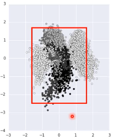
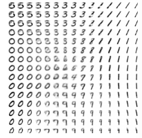
1.6 还有很多 non-linear dimension reduction
RBM(这个人很多人误解，他其实不是神经网络) DBN(也不是神经网络) RBM 和 DBN 都是 graphical model, 不是神经网络 https://www.youtube.com/watch?v=Cdpfpy4bXPI, 这里是介绍 graphical model 的教学视频。
Learning More
- Restricted Boltzmann Machine
- Neural networks [5.1] : Restricted Boltzmann machine – definition
- https://www.youtube.com/watch?v=p4Vh_zMw-HQ&index=36&list=PL6Xpj9I5qXYEcOhn7TqghAJ6NAPrNmUBH
- Neural networks [5.2] : Restricted Boltzmann machine – inference
- https://www.youtube.com/watch?v=lekCh_i32iE&list=PL6Xpj9I5qXYEcOhn7TqghAJ6NAPrNmUBH&index=37
- Neural networks [5.3] : Restricted Boltzmann machine - free energy
- https://www.youtube.com/watch?v=e0Ts_7Y6hZU&list=PL6Xpj9I5qXYEcOhn7TqghAJ6NAPrNmUBH&index=38
Learning More
- Deep Belief Network
- Neural networks [7.7] : Deep learning - deep belief network
- https://www.youtube.com/watch?v=vkb6AWYXZ5I&list=PL6Xpj9I5qXYEcOhn7TqghAJ6NAPrNmUBH&index=57
- Neural networks [7.8] : Deep learning - variational bound
- https://www.youtube.com/watch?v=pStDscJh2Wo&list=PL6Xpj9I5qXYEcOhn7TqghAJ6NAPrNmUBH&index=58
- Neural networks [7.9] : Deep learning - DBN pre-training
- https://www.youtube.com/watch?v=35MUlYCColk&list=PL6Xpj9I5qXYEcOhn7TqghAJ6NAPrNmUBH&index=59